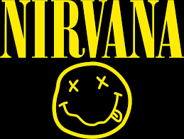

Nirvana

EE. UU. | Nacimiento: 1987, Aberdeen, Washington
Miembros principales: Kurt Cobain, Krist Novoselic, Dave Grohl
Canción más icónica: Smells Like Teen Spirit
Influencia: Líderes del movimiento grunge. Representaron la angustia y apatía de la Generación X. Derribaron la estética glam y abrieron la puerta al rock alternativo en los 90.